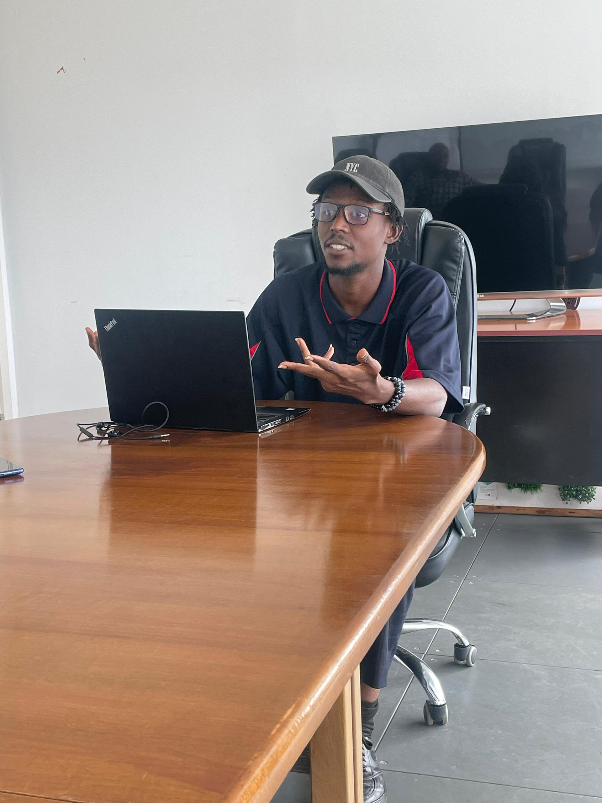
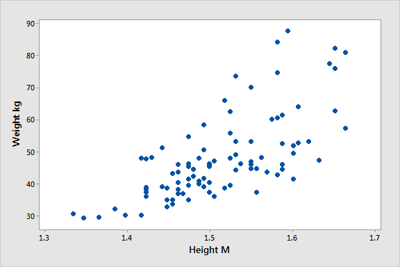

A full-stack property management project built with an Express/PostgreSQL backend and a Vite-based frontend. Includes authentication, role-based access and property management features.

A Python and Jupyter Notebook data analysis project exploring relationships in movie data and using visualisation to communicate findings from a dataset.

An interactive browser project built to practise JavaScript, HTML and CSS, allowing users to create simple pixel-based artwork through a grid interface.

A Python project built around game logic, user input, branching decisions and problem-solving. One of my earlier projects that helped build my programming foundation.
What I Work WithTechnical Skills
Data & Analytics: Microsoft Excel, SQL, Power BI, Tableau, Python and data analysis.
Software Development: Python, JavaScript, HTML, CSS, REST APIs, Node.js and PostgreSQL.
IT & Systems: Technical support, network troubleshooting, ELV systems, IP surveillance, access control, BMS support and alarm troubleshooting.
Cloud & Databases: Oracle Cloud Database Services, AWS fundamentals and PostgreSQL.